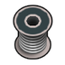

贵重级·太空·焊锡 Solder
V共0件 价值15 质量0.40 护甲—/—/— 利钝—/—
Vile's Materials Science · def自带 · Things/Item/Parts/Solder

贵重级·太空·纯钨（W） Tungsten
V共0件 价值40 质量0.35 护甲1.40/1.15/0.14 利钝1.60/1.20
Core_SK · def自带 · Things/Item/Ingot

贵重级·太空·钒（V） Vanadium
V共0件 价值15 质量0.40 护甲—/—/— 利钝—/—
Vile's Materials Science · def自带 · Things/Item/Ingot

贵重级·太空·钼（Mo） Molybdenum
V共0件 价值15 质量0.40 护甲—/—/— 利钝—/—
Vile's Materials Science · def自带 · Things/Item/Ingot